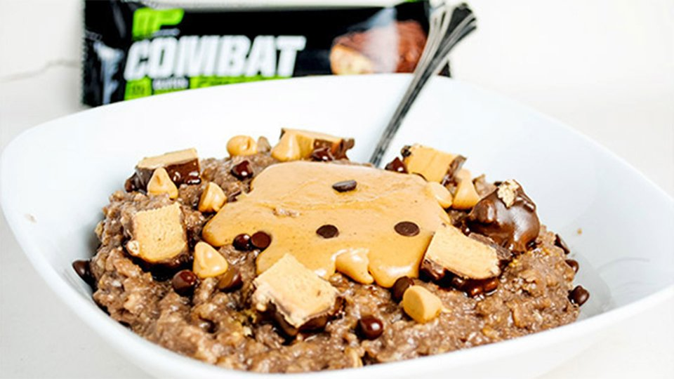

Home
Chocolate Peanut Butter Protein Oatmeal

from bodybuilding.com
Description
A fan of Reese's peanut butter cups? This chocolate peanut butter protein-style oatmeal tastes just like it—heck,
it even incorporates some of it into the recipe!—and is just the ticket to send your taste buds into ecstasy.
Ingredients
- 3/4 cup raw oats
- 3/4 cup milk (1%)
- 1 scoop MusclePharm Combat Powder (Chocolate)
- 2 liquid egg whites
- 1 tsp cocoa powder, unsweetened
- to taste cinnamon
- 1/2 bar Musclepharm Combat Crunch Bar
- 1 tsp dark chocolate chips
- 1 tbsp natural peanut butter
Steps
- Microwave oats and water or milk in a microwave-safe bowl for about 2-1/2 minutes.
- Add 2 egg whites and whisk until completely mixed in. Microwave for another 45 seconds.
- Add protein powder and cocoa powder and mix. Add Stevia and cinnamon if desired.
- Chop protein bar (chocolate peanut butter flavor) into small squares. Top with protein bar pieces, chocolate
chips, peanut butter chips, and natural peanut butter.